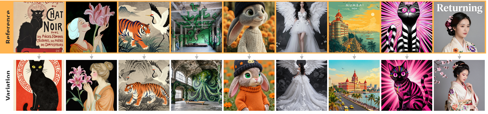
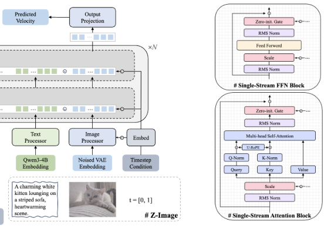
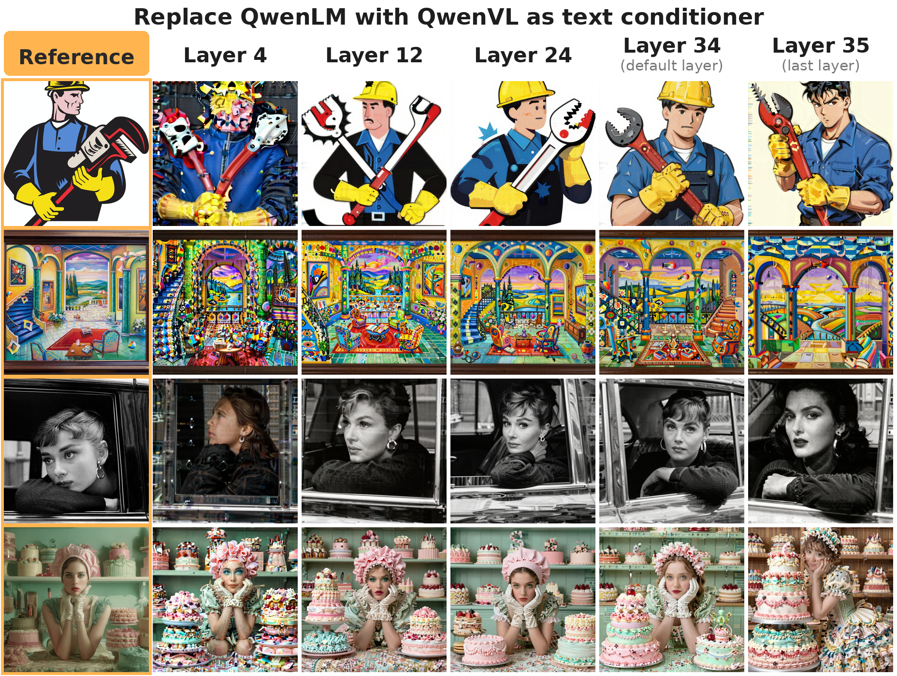
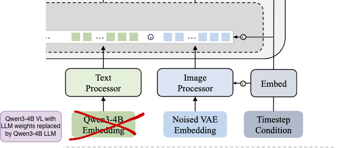
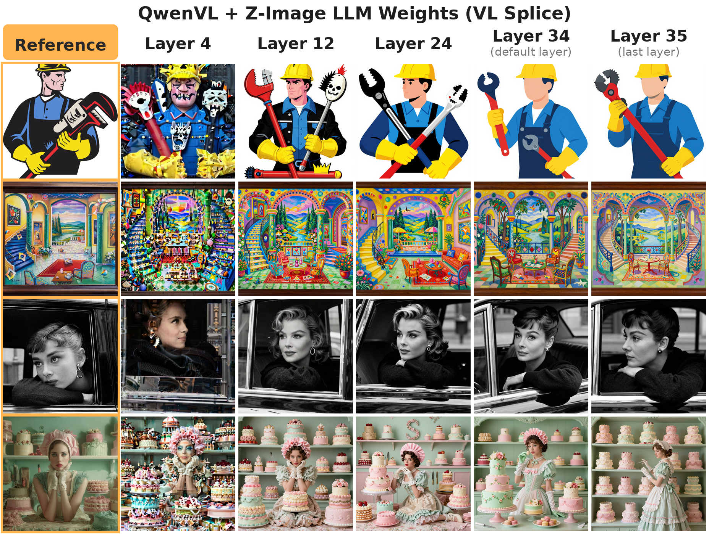

By Gowthami Somepalli and Sravani Somepalli · Part 1 of the Emergent Behaviours of Z-Image series. This is original, independent research. A full paper with detailed analysis and reproducible experiments is in preparation.
Z-Image Base and Turbo are both text-to-image models. But it turns out they're secretly image-to-image models tooBy "image-to-image" I don't mean instruction-based editing like "remove the hat." I mean creative visual riffing — you give the model an image and it produces variations that preserve the semantic essence while freely reinterpreting structure, color, and composition. Think visual brainstorming, not surgical editing. — you just have to unearth that emergent behavior with a little architectural hacking. In this series of blog posts, I'm going to share a bunch of quite interesting results I've stumbled upon over the past few weeks.
Here's a taste — some image-to-image variations, generated with zero additional training:

Why Z-Image?
Z-Image1 is an incredible image generation model that came out a few months ago. It's open-source, its 6B model is remarkably capable, and — this is the rare part — both the base and distilled versions are released. The science of studying the gap between these two is fascinating in its own right.
But the main reason I'm excited: it's a single-stream diffusion transformer (SS-DiT). Conditioning tokens and generation tokens share the same attention layers, the same projections, everything.SS-DiTs are architecturally simpler than dual-stream alternatives like SD3/FLUX, where conditioning and generation have separate processing paths that only interact at specific cross-attention points. I like SS-DiTs not just because they're simpler to train and ablate, but because they tend to harbor interesting emergent capabilities — capabilities the model was never explicitly trained for, just waiting to be surfaced.
That's really the heart of this series. We talk a lot about "scaffolding" in the LLM world — wrapping models in tool-use pipelines and agentic loops to coax out capabilities the base model technically has but doesn't easily expose. That kind of thinking is surprisingly underdeveloped in image generation. Most people treat diffusion models as fixed input→output boxes. There's a lot of latent capability hiding inside these architectures, and sometimes all it takes is a creative rewiring to unlock it.
Z-Image — Quick Intro
There are two models, both 6B parameters. Base runs at 50 steps with CFG=4, and Turbo (distilled) runs at 8 steps with no CFG. Architecturally it's a single-stream DiT (Figure 2) — conditioning and generation tokens self-attend to each other using shared projection layers throughout. Text conditioning comes from a Qwen3 language model (4B parameters), using the second-to-last hidden layer embeddings.Important detail for later: the text conditioning model is a pure language model — it has no vision encoder, no image tokens, no visual understanding of any kind. It only sees text.

There's nothing too exotic about the architecture or loss functions. The magic is in their extensive data curation engines and data curriculum design — I'd attribute most of the model's quality to that. The rest comes from careful post-training: they performed distillation + RL in a single step, which is something of a first for training large-ish DiT models in the open-source world.
Emergent Image-to-Image Behavior
Before I dive in — when I say "image-to-image" here, I don't mean instruction-based editing ("remove the hat," "change the background"). I mean something more like creative visual riffing: you give the model an image, and it produces variations that preserve the semantic essence while freely reinterpreting structure, color, composition. Think visual brainstorming, not surgical editing.
The Starting Point
When I started this project, my plan was straightforward: take Z-Image and fine-tune it into an I2I model by integrating image embeddings as conditioning.Why? Because image variations and interpolations are endlessly fun.
Z-Image's technical report mentions they trained an omni model as the parent of both Base and Turbo — so the model has seen image understanding objectives. But neither the omni checkpoint nor any editing weights were released. I tried integrating SigLIP into Z-Image Turbo as an image encoder. Didn't work out.
The "For Shits and Giggles" Experiment
Then I had a thought: the text encoder is Qwen3 (a pure LM), and Qwen3-VL is its vision-language sibling — same transformer backbone, but with visual understanding bolted on. What if I just swap Qwen3-LM with Qwen3-VL in the conditioning pipeline?
So, mostly out of curiosity, I ran a few inferences.
And to my surprise — it worked out of the box (Figure 3).

...or so I thought. The generations look quite fantastic for a zero-shot experiment, but look closely and you'll spot high-frequency artifacts throughout. Enough to make the results not practically useful.
The Splice That Changed Everything
I bounced around a few ideas — fine-tuning projections, adapter schemes. And then the key insight hit me: QwenVL's representations are somewhat out-of-distribution for the DiT, which was trained to expect QwenLM features. What if I replace QwenVL's language model weights with QwenLM's weights, keeping only the image processing and injection modules from the VL model?
I called this "Spliced QwenVL" (Figure 4) — grafting the visual front-end of QwenVL onto the language backbone that Z-Image already knows and trusts.

It's literally vl_model.language_model.load_state_dict(z_image_weights) — swap the LLM weights, keep the ViT and PatchMerger from the VL model intact. Works because both models share identical architecture: 36 layers, 2560-dim hidden states.
And to my surprise (again!) — it worked exceptionally well (Figure 5). No artifacts whatsoever. The outputs are clean enough that you'd think they were standard T2I generations. This is fully emergent behavior — no training, no fine-tuning, just an architectural splice at inference time.

Why Does This Work?
Here's my working intuition (would love to hear alternative theories).
Distribution alignment matters more than capability. QwenVL can produce rich visual features, but they live in a slightly different feature space than what the DiT expects. Swapping in the LM weights projects visual information through a representation space the DiT has already been calibrated to consume. The image information gets "translated" into the dialect the DiT speaks.
The visual front-end does the heavy lifting. The ViT and PatchMerger from QwenVL extract and structure the visual information. The LM backbone then acts as a feature normalizer — reshaping those signals into something that looks like "text conditioning" to the DiT, even though it's carrying image semantics.
SS-DiTs might be especially amenable to this.Because single-stream architectures process conditioning and generation tokens in shared attention, they may be more robust to conditioning signals that are semantically coherent but come from unexpected sources. The shared self-attention acts as a natural harmonizer.
I also confirmed that Z-Image's text encoder is essentially frozen Qwen3-4B base — the safetensors blob hashes match. The LM weights were never fine-tuned during Z-Image training. But here's the more interesting implication: the fact that the splice works at all tells us something about QwenVL's training. If QwenVL had dramatically altered the LM's representation space during vision-language training, swapping in the original LM weights would break everything. The visual embeddings making sense even with untouched LM weights suggests QwenVL's vision training was relatively conservative — it learned to project visual tokens into the existing LM representation space rather than reshaping that space around vision.
Layer-by-Layer: A Spectrum from Faithful to Creative
Here's where things get really interesting. In the original Z-Image setup, text conditioning uses layer 34 (the "-2" layer) of the Qwen3 LM. But with our spliced model, we can tap any intermediate layer — and each layer produces a qualitatively different kind of variation (Figure 6).

Layers at or after layer 12 generally produce coherent images. This isn't a fragile single-sweet-spot phenomenon — many intermediate layers work. But the character of the variations shifts dramatically as you go deeper.
Earlier layers preserve more information about the original image: spatial layout, object count, color palette. The variations stay close to the input. Later layers produce more semantically-driven reinterpretations. The LM's learned biases start showing through — object counts may change, color schemes get remapped (a red dress becomes blue), compositions get freely reinterpreted. Counting goes out the window: expect different numbers of subjects, sometimes more, sometimes fewer. Text in images gets especially mangled — the model tends to preserve the visual presence of text (it knows there should be words there) but generates random character sequences instead of the original content. It's encoding "there is text here" as a semantic concept without retaining the actual string.
I personally found layer 24 hits a sweet spot of creative reinterpretation while maintaining coherence — it feels like the model is thinking about the image rather than copying it. Layer 34 (the default "-2" layer) is reliably strong across the board. Layer 35 (the last layer) is the fun one — it sometimes surprises you with nuanced reconceptualizations of the input, as if it decided to reinterpret the scene at a higher level of abstraction. It also has a funny habit of just... deciding not to render text at all, even when the input is text-heavy. Apparently the final layer's representation compresses past the point where "there should be words here" survives.
There's a nice theoretical lens here: this layer-by-layer behavior is essentially probing how the LLM's internal representations encode visual information. Earlier layers retain more perceptual detail, later layers compress toward semantic abstractions. The DiT faithfully reflects whatever level of abstraction it's given.
Misc Notes
Multi-resolution works out of the box — input and output can be completely different resolutions and aspect ratios. I've tested from 512×512 up to 1024×1024 with various non-square ratios, all clean. The input image is capped at a maximum pixel count before VL encoding, but the DiT handles any output resolution independently.
All results shown here use zero additional training. This is purely architectural modification at inference time. The emergent behavior was always there — it just needed the right wiring to surface.
"But Z-Image Has an Omni/Edit Model..."
Yes — Z-Image trained an omni model with image understanding, and yes, they have editing capabilities. But those checkpoints aren't released. What you're looking at here is the text-to-image-only checkpoint doing image-to-image with zero training, zero fine-tuning, zero adapters.The Turbo model has no SigLIP weights, no image conditioning pathway, nothing. It was trained purely to go from text→image. The fact that it produces coherent, artifact-free image variations through nothing more than an inference-time weight splice is what makes this emergent behavior — not a feature the model was designed to have, but one that falls out of the architecture for free.
What's Next
This is Part 1. I've been deep in this rabbit hole for weeks now and there's a lot more to share.
Part 2 — Where Did the Diversity Go? The splice works, but outputs across seeds look suspiciously similar. Turns out the DiT has fascinating attention sinks that explain why — and exploiting them recovers diversity.
Part 3 — Approximate Object Composites for Free. Take a rough cut-paste collage, run it through the I2I pipeline with SDEdit, and the model cleans it up into a coherent image. Zero training, zero prompt engineering.
Part 4 — Freeform Explorations and Failed Experiments. Sometimes the failures are more interesting than the successes.
Stay tuned. Code and implementation details are coming as the series progresses, and we're working on a research paper covering the full scope of these findings.
References
- Cai, H., Cao, S., Du, R., Gao, P., Hoi, S., Hou, Z., Huang, S., Jiang, D., Jin, X., Li, L., et al. Z-Image: An Efficient Image Generation Foundation Model with Single-Stream Diffusion Transformer. arXiv preprint arXiv:2511.22699, 2025. Paper
If you would like to cite this post in an academic context, you can use this BibTeX snippet:
@misc{somepalli2026emergent,
author = {Somepalli, Gowthami and Somepalli, Sravani},
title = {Emergent Behaviours of Z-Image},
url = {https://somepago.github.io/posts/emergent-rabbit-hole-series/},
year = {2026}
}